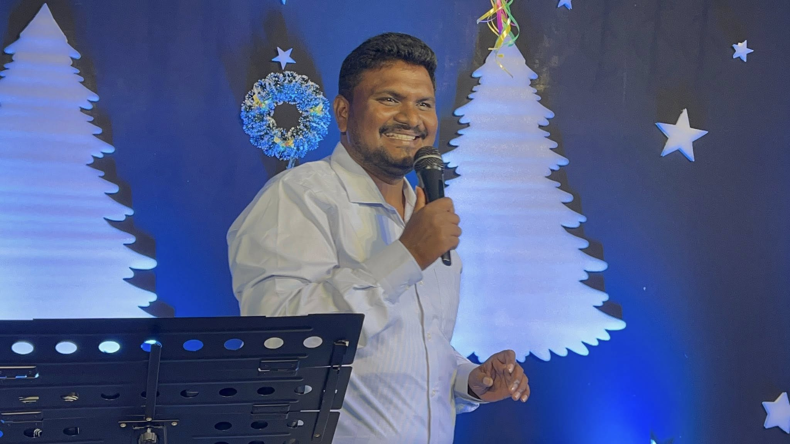

A young, Spirit-filled church rooted in Andhra Pradesh and reaching the nations. Real people, real faith, real Jesus — every Sunday, in person and online.
JCNCM is more than a Sunday gathering — it's a family on mission. Rooted in the Word, led by the Spirit, and planted in the soil of Andhra Pradesh, we exist to bring heaven to earth in every life we touch.
From Telugu villages to the global church, our story is one of revival, discipleship, and relentless worship.

Long before JCNCM existed, there was a burden — for the villages the cities had forgotten, for the pastors no one was paying, for the children growing up without a Bible in their hand.
That burden belonged to one man. And it wouldn't let him go.
Raised in rural Andhra Pradesh, our pastor saw the gap between the Gospel preached on glossy stages and the quiet faith of widows sweeping courtyards at dawn. He felt the call not to build a bigger platform, but to walk where the crowds never go.
Today, JCNCM is the answer to that call — a ministry that doesn't measure itself in seats filled, but in villages reached, lepers loved, orphans housed, and pastors supported so they can keep standing.
"If the forgotten ones are not remembered by the Church, we have forgotten the Gospel." — A calling, not a career.
Six ministries. One calling. Whether you're new to Jesus or walking with Him for years, there's a place for you here.
Bible stories, songs, and prayer for village children — teaching the next generation that they are seen, loved, and called by Jesus.
Sponsor a ChildMeeting people where they are — on footpaths, at bus stands, in slums. Simple conversations, honest prayer, and the hope of Christ shared freely.
Join an OutreachVisiting leprosy colonies and the homeless with food, medicine, and human dignity. No one stays forgotten when Christ is their advocate.
Support This WorkStanding with widows and seniors left behind — monthly rations, home visits, prayer, and the comfort that they are family to us.
Partner With UsA safe roof, three meals, school fees, and a family for orphaned and abandoned children — raised in the knowledge that they belong.
Become a ParentRural and village pastors serve with almost nothing. We provide monthly stipends, Bibles, training, and brotherhood so they can keep preaching.
Stand With ThemFresh Word every week. Bible-based teaching for real life, from the pulpit to your phone.
New to JCNCM? Got a question? Need prayer? Drop us a line — we read every message and reply within a day.
Jesus Christ of
New Creation Ministries
Andhra Pradesh, India